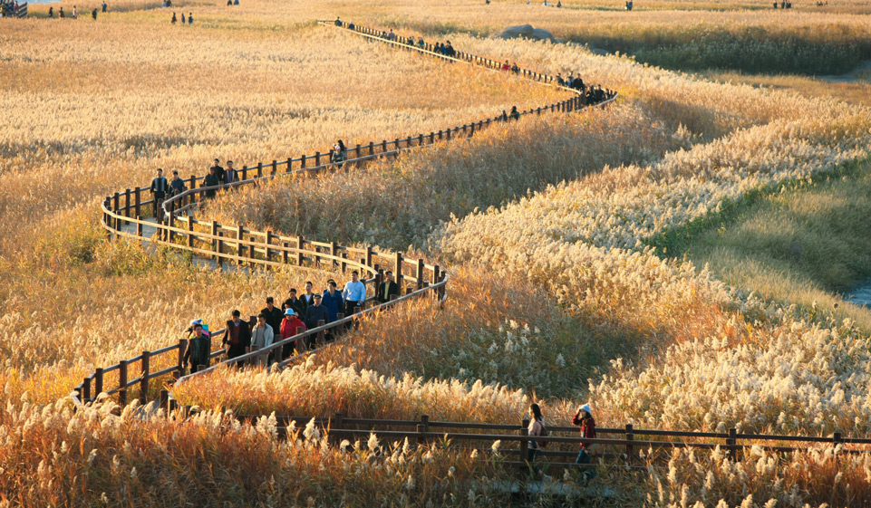

순천은 전라남도 남동부에 위치한 생태도시로 자연 생태와 문화가 조화를 이루는 곳입니다.
대표 명소인 순천만국가정원은 세계 여러 나라의 정원이 조성된 국내 최초 국가정원으로, 사계절 내내 아름다운 풍경을 자랑합니다.
이어지는 순천만습지는 세계 멸종위기종인 흑두루미 개체군의 절반이 서식하는 중요한 생태지역으로,
순천이 지닌 생태적·문화적 가치를 동시에 경험할 수 있는 유네스코 세계자연유산이기도 합니다.
깨끗하고 한적한 분위기 덕분에 갈 때마다 마음이 편해지는 저의 고향입니다.

저의 고향, 순천을 소개합니다!


- 